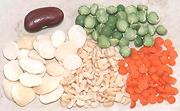

SAFARI
Users
- Terms & Definitions
- Measures - Canned vs Dried, etc.
- Dried Beans & Peas - Soaking, Brining, Cooking & Storing.
- Canned Beans & Peas - formerly dried, then soaked, cooked and canned.
- Frozen Peas and Beans - Next best to Shell Beans
- Lentils - Small lenticular beans, dried whole with skin on.
- Dal - Split and Peeled Beans, Peas & Lentils
- Pod Beans - Fresh bean pods containing immature beans.
- Shell Beans - Mature beans, but not at all dried. They may be sold in the pod or out.
- Bean Sprouts - improved vitamin C, antioxidents, protein, fiber, peptides.
- Sprouting Beans, Peas & Lentils - instructions and equipment
- Health & Nutrition
Terms &Definitions
Bean:
The seeds of beans are generally elongated or even rectangular. Distinctly different genera originated in China, India, the Americas, and the Mediterranean (see our General & History) page.Dal:
[Dhall] An Indian term that most commonly indicates the peeled and split form of dried Pulses (Beans, Peas and Lentils). Unfortunately, in India they are very sloppy with terms, so some things they call "Dal" are not split and peeled, and some small Beans are called "Lentils". On the Clovegarden site, we are more strict on these terms, and here North American "Split Peas" are categorized as "Dal". Dal is also the word for a finished dish of cooked Dal, particularly in Southern India.Sabut:
An Indian term indicating a whole unpeeled bean, pea or lentil - not widely used.Gram:
An Indian term that most commonly indicates the whole unpeeled form of dried Pulses, but loosely used and sometimes refers to the peeled and split form.Legumes:
On the Clovegarden site, we use the botanical definition of "legumes", meaning fruits of all members of the Fabaceae (the Bean family). To a French chef, "legumes" means only whole pods, such as green beans.Lentil:
The seeds of lentils are flattened and lens shaped. Lentils probably originated in western Asia. In India the dal forms of some small beans are called "lentil" even though they are not.- Pea: Peas proper are members of the species Pisum sativum, with generally round seeds, but the term is also used for a number of beans with round seeds. Peas proper probably originated in Western Asia.
- Pulse: This is a collective term for the edible seeds of all Beans, Peas and Lentils.
Measures
 These measures were determined for canned and dried Pinto Beans. The
equivalents for dried to canned for other beans may vary some, but this
is a good guide.
These measures were determined for canned and dried Pinto Beans. The
equivalents for dried to canned for other beans may vary some, but this
is a good guide.
Canned Beans:
These are most often purchased in 14 ounce cans. A can will usually contain 1-1/2 cups of beans. Drained and rinsed, they will weigh about 9-1/2 ounces. This equivalent to about 2/3 cup of dried beans.Dried Beans:
To get the equivalent of a 14 ounce can of beans, soak and cook 4-1/2 ounces (2/3 cup) of dried beans.Dried Beans & Peas
This section has been replaced by a separate document for easy
reference to this important issue. See
Cooking Dried Beans.
Canned Beans & Peas
Canned beans are dried beans that have been soaked and cooked by industrial processes. There are a few exceptions, such as Green Pigeon Peas, which are canned before they dry. This is also the case with Green Peas.
Canned Beans:
These can be a great convenience when you are strapped for time. Though starting with dried beans yourself will usually yield better results, canned beans are pretty good, but vary with brand. Find a good brand for your type of beans and stick with it. The common 14 ounce can will yield about 1-1/2 cups of beans, drained and rinsed, which will weigh about 9-1/2 ounces.Canned Green Peas:
These are absolutely necessary for replicating the dismal cuisines of Soviet Russia and Eisenhower era America. Brands in glass jars from Russia and other former Soviet countries are widely available here in Southern California for just that purpose. Otherwise, there's little excuse (unless you are stocking a remote cabin with no refrigeration). Use Frozen Green Peas.Canned Green Pigeon Peas:
These are not peas, but African beans. Unlike most canned beans they are not dried before cooking and canning, and are minimally cooked. They are a good resource for African, Indian, and Caribbean cuisines, as frozen Pigeon Peas not available outside of communities with strong Caribbean or Indian influence. They work well in soups, stews and even salads. Goya is the dominant brand, and better than others I've tried - if you can ignore their public endorsement of Trump.Storage:
As with other food storage, a cool place is best. By 2 years, canned beans will have degraded somewhat, likely darker in color and less firm. If the can is swollen, at all, discard the contents, unless you want to die painfully.Frozen Peas & Beans
Not all types of peas and beans are available frozen, but a number of those often used as Fresh Shell Beans are. Frozen beans are lightly cooked for the freezing process, but remaining cooking time will vary by type.
Frozen Green Peas:
These are fantastic for a huge number of recipes that call for fresh garden peas - the next best thing and a whole lot less expensive and perishable - and available year round. They have been lightly cooked for freezing, so add to the recipe for just the last couple minutes. For soups and stews that are reheated, they will loose their bright green color, but will still taste fine.Frozen Beans:
Lima Beans and Black Eyed Peas are widely available frozen. They need more cooking time than Frozen Green Peas, but not as much as fresh shell beans. You have to sample them, to see if they are done, so include a few more than your recipe requires.Frozen Green Pigeon Peas:
These are not Peas, but African Beans. In North America, they are reasonably available in regions with significant Caribbean populations, but can also be found in the freezer cases of well-stocked Indian markets, The substitute is Canned Green Pigeon Peas, but they're still pretty good, as they're canned as shell beans, not dried and re-hydrated like other canned beans.Frozen Fava Beans:
These are widely available in our ethnic markets, both shelled and shelled and skinned. They are a great convenience, and far more economical than buying Favas in the pod. Like other frozen beans, you need to sample them during cooking to see if they are done.Edamame:
These are immature soy beans, available in the pod and shelled. These beans have not yet developed the full soy suite of enzymes and toxins, so are safe to eat in moderate quantity. They are par boiled before freezing, and generally boiled, steamed or microwaved just before eating, which reduces what toxins there might be to safe levels.Frozen Green Beans:
These are a "convenience" product, not really necessary due to easy availability of fresh green beans all year. They are mostly cooked for the freezing process, so add them near the end of cooking.Pod Beans
Pod Beans, including green beans, romano beans, and the like, are immature beans that are still developing in their pods. They do not yet contain significant amounts of the sugars and toxins that are problems in mature beans. They are cooked and consumed pod and all. Note that many beans have slightly to very toxic pods, so only eat those that are commonly sold for eating in this form.
Storage:
Pod Beans purchased fresh will keep for 4 to 6 days refrigerated, loosely bagged in plastic. Make sure there is no free water on the beans before packaging and refrigerating, and remove any that are damaged (damaged areas can be cut away with a razor sharp knife).Cooking:
The standard method of cooking pod beans is to first cut them to the desired configuration. Then drop them into boiling salted water and cook them until just crisp tender. They should then be drained and immediately refreshed under cold running water. Add them to recipes near the end of cooking. This method preserves their color and nutrients, and keeps them from becoming mushy.Shell Beans
Shell beans are mature pod beans. The pods have probably started to dry, but the beans in the pods have not dried. These may be sold shelled or in the pod (particularly peas and sometimes black eyed peas). Issues of toxicity and flatulence are not as severe as for dried beans, but greater than for pod beans.
Shell beans are relatively expensive from local producers because shelling them at this stage is much more tedious than for dried beans. They are considerably more affordable purchased frozen, as larger producers have developed industrial methods for shelling them and distribution frozen is far more practical than fresh.
Cooking:
These beans will need a lot longer cooking than Pod Beans, but quite a bit less than even soaked dried beans. The only way to be sure is to sample them, so start cooking a few more than your recipe calls for.Fresh Garden Peas:
This is the most popular form of "Shell Beans", and far easier to shell than other beans. They are not bitter raw and need less than 10 minutes of cooking, so add them to recipes very late.Fava Beans:
These are widely available "in the pod" here in Southern California due to our large communities from the Mediterranean and Near and Middle East. They end up being quite costly after shelling, and the skins need to be removed form individual beans after cooking (easily done). Fortunately, Frozen Fava Beans are also widely available, both shelled and shelled and skinned. Very young Fava Beans that can be cooked pod and all are not available here.Storage:
Beans at this stage are quite perishable and subject to mold. They will keep for 4 to 6 days refrigerated in a plastic bag. Make sure there is no free water on the beans before packaging and refrigerating.Lentils
This section applies only to whole, skin-on lentils. For red lentils or other peeled and split lentils, see Dal.
Soaking:
These are small beans with a lenticular shape. Their skins are thinner and the soaking (or brining) can fully penetrate easily, since it doesn't have far to go. For this reason, lentils may not be soaked at all, or soaked for just 2 hours or so.Cooking:
Lentils are often just added to a soup recipe at the beginning of cooking and the soup is done when they are tender. For soups and stews I generally use the smallest Green Lentils, because they hold their shape much better in cooking than the larger green and brown ones. Contrarily, use the largest ones if you want a creamier effect.Storage:
Considerations for storage are the same as for dried beans, but the small size and thin skin makes them somewhat more vulnerable. They can become difficult to cook in less than 2 years. A long brining and long cooking may help if the problem isn't too severe.Dal
 Dal (or Dhall, etc.) is an Indian word for split and peeled beans, peas and lentils. Unfortunately, in India they are not consistent, so some unpeeled pulses are called "dal". On the Clovegarden site we are strict, and categorize even North American split peas as "Dal". In India they are called "Mater Dal".
Soaking:
Split and peeled Dal is not soaked. If an Indian recipe calls for soaking a Dal, it is probably one that is called "Dal" even though whole with skin on. Red lentils are always "dal" whether called that or not.Cooking:
Dal is very fast cooking. In southern India, they prefer to cook dal to mush, but I prefer it to have more texture, so I ignore their cooking times.Storage:
Considerations for storage are the same as for dried beans, but the small size and thin or no skin makes them somewhat more vulnerable. Some sites say rehydration problems are caused by oil in the skins of beans oxidizing, but I've had Chana Dal and Toor Dal (with no skin) become impossible to cook tender in less than 2 years.Bean Sprouts
Sprouting significantly changes the taste, texture and nutritional
makeup of beans. Protein and Vitamin C are increased, while phytic
acid and trypsin inhibitor are decreased. Protein digestibility also
improves. These changes have mostly occurred by time the sprouts are
1/2 inch long. For details see our
Bean Sprouts page, which also has instruction on sprouting
them.
Health & Nutrition.
Flatulence:
This feature of beans, particularly dried beans, bothers many people, but is not noted as a problem with populations who eat beans very regularly. Those with strong exposure appear to have acquired enzymes that help digest the sugars that cause the problem. Soaking the beans and discarding the cooking water can reduce flatulence because the indigestible sugars responsible are water soluble. This does, however, reduce the flavor somewhat.A substance called "Beano" is marketed to reduce flatulence - you don't add it to recipes but take some along with the beans. Some herbs, particularly Epazota, cooked with the beans, are said to help.
The real cure is simple, healthy and cheap. Eat a diet rich in beans and cabbages which will build up your ability to process these sugars. Cultures that eat a lot of beans don't generally ascribe flatulence to them.
Nutrition:
Beans are high in protein (dried beans are about 20% protein), but it is not complete, lacking methionine. This can be completed by grains. Vegetarians should consume beans and grains together, or within 12 hours of each other to balance the protein. At one time it was thought necessary to eat them both at the same meal, but that has been shown unnecessary. They also offer a good selection of vitamins and minerals, but beans in storage for much more than a year have pretty much lost their vitamin content.Toxicity:
Most beans are at least slightly toxic, but toxicity is reduced to insignificant levels by normal cooking. Lima beans should be cooked in an open pot, at least at the start, to allow any cyanide to evaporate. Frozen Limas have already been cooked long enough to detox, and dried Limas are cyanide free. Other beans, notably soy beans and grass peas have more complex and difficult to resolve toxicity issues.Caution: Fresh or Dried Red Kidney Beans are seriously toxic. Regular stovetop cooking will detox them in 10 minutes at a boil - but they must not be cooked in a slow cooker, especially set to low. They can become up to 5 times as toxic as uncooked. White Kidney Beans are less toxic, but caution is still advised.
Pods of some edible beans are toxic and should not be consumed - stick with those generally sold as edible. Some lima beans are so toxic the FDA won't allow them to be imported or sold in the U.S., and many bean plants are very toxic indeed, so it's best not to experiment with wild beans you don't know.